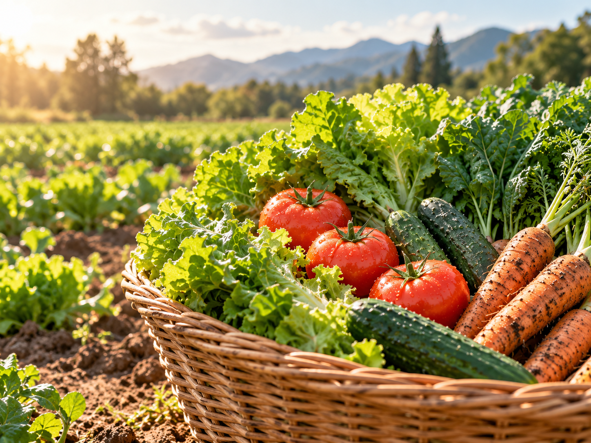
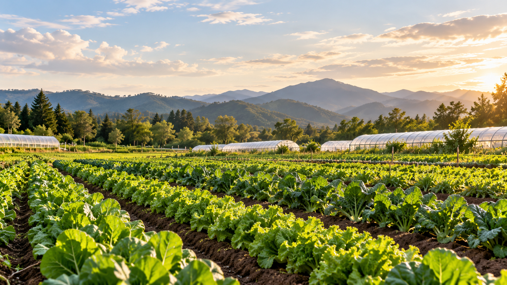
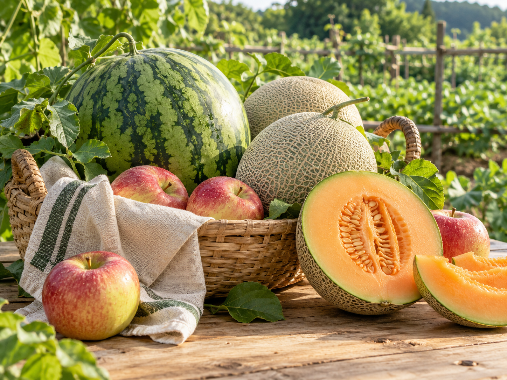
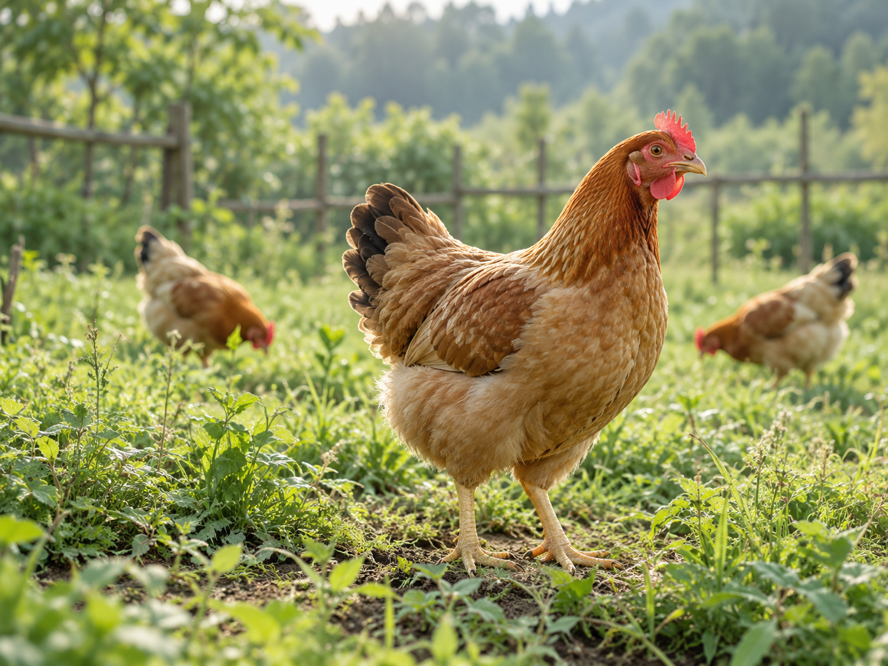
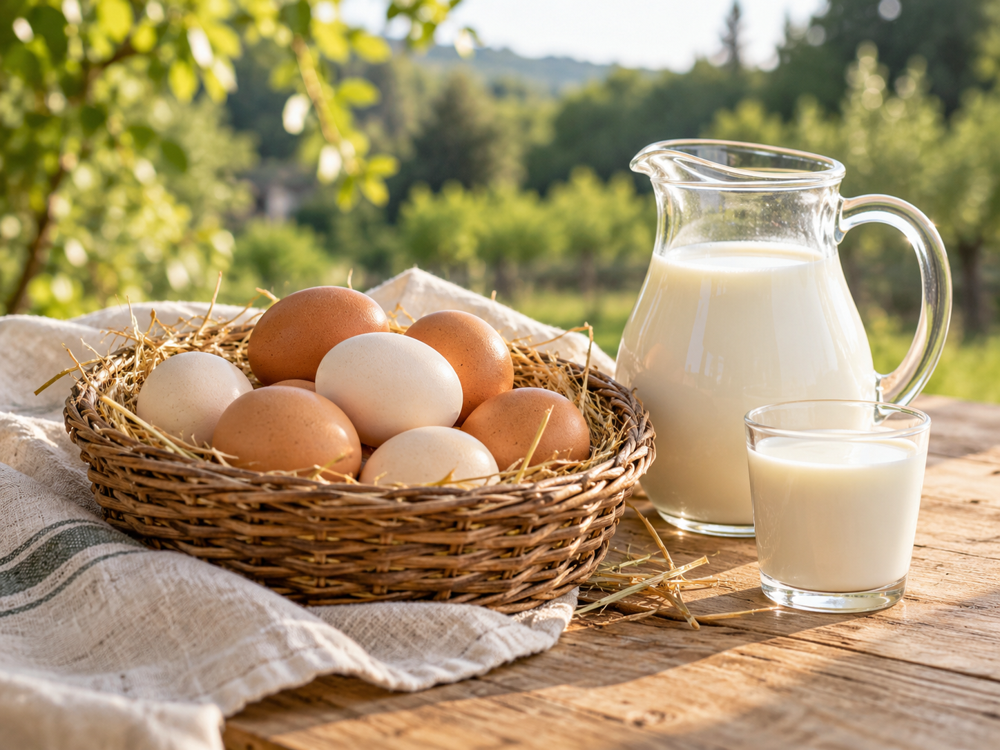
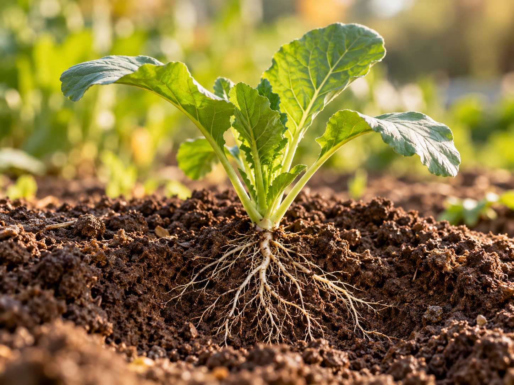
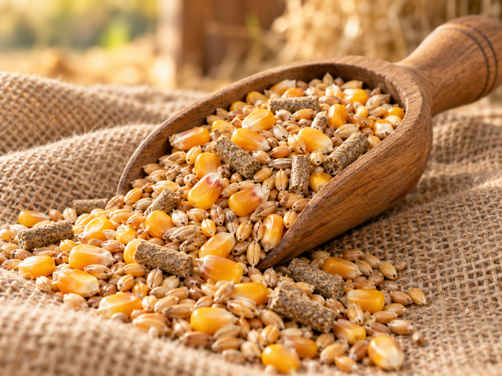

导航与筛选功能需要 JavaScript；以下首页内容仍可阅读。

连接食材、基地与生产记录
介绍微生物技术在种植与养殖中的应用，连接食材、肥料与饲料，以及基地的生产和检测记录。

蔬菜、瓜果、家禽肉与蛋奶



食材图片用于分类展示，实际产品、价格与批次资料待补充。
了解投入品，探索种植与养殖的生产过程。

查看分类、成分、适用对象与使用方法。

了解原料、菌种、适用动物与储存说明。
生产记录 · 日常管理 · 指标监测
示意图，不代表实际基地
从分类、作用与应用场景，了解菌养技术的基础。
看见技术、生产过程、食材与检测之间的联系。
从菌株资料、发酵工艺到实际生产记录。
按风险类型与年份检索，关注原始信息来源。
事件资料整理中。正式内容将展示发生时间、涉及食材、调查信息与来源。